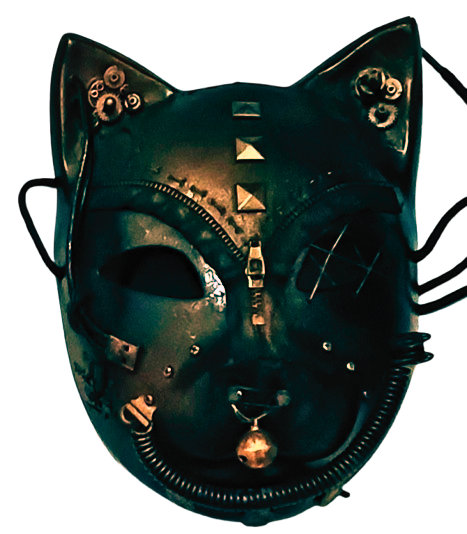

POST-HUMAN ERA explores sound as an unstable and distributed system shaped through interaction, interference, accumulation, and participation. Developed through noise structures, layered frequencies, visual fragments, archives, and network-inspired interfaces, the showcase approaches listening not as passive reception, but as an active process of navigating signals within a continuously shifting environment.
Rather than functioning as a conventional exhibition with fixed compositions and singular perspectives, POST-HUMAN ERA operates as an open framework where sound behaves dynamically across space, systems, and audience presence. Multi-channel works, listening booth interfaces, projected interactions, printed zines, and participatory communication layers coexist as interconnected nodes within the same environment.
The showcase is deeply influenced by contemporary modes of interaction shaped by streaming culture, live chat systems, digital archives, fragmented attention, and networked communication. Audience participation is not treated as a secondary feature, but as an integral component capable of altering the atmosphere, flow, and interpretation of the space itself. Through simultaneous listening, anonymous interaction, overlapping inputs, and temporary collective presence, the work continuously reconstructs itself in real time.
POST-HUMAN ERA does not attempt to imagine a distant futuristic condition. Instead, it observes how technological systems, distributed communication, and mediated behaviors have already reshaped the ways humans listen, interact, and construct meaning today. The “post-human” within this showcase emerges not through spectacle or technological domination, but through subtle shifts in perception, participation, and interconnected behavior.
Produced by def-n Networks (Lantai Dua Studio), the showcase exists as both presentation and active system — a temporary environment where sound, interfaces, audience behavior, and spatial presence continuously influence one another beyond stable or linear forms.
The practice is strongly influenced by internet culture, streaming systems, networked communication, fragmented media, and the relationship between humans and digital systems in everyday life. Through open and non-linear approaches, Karnivulgar often combines audio, visual fragments, digital archives, interactive interfaces, printed matter, and participatory situations into interconnected artistic ecosystems.
Alongside its artistic activities, Karnivulgar is connected to independent production and experimental media initiatives focused on project development, archiving, system design, and collaborative practices. POST-HUMAN ERA represents one of the project’s most comprehensive manifestations — functioning not only as a showcase of works, but as a temporary environment where sound, audience behavior, and systems continuously interact and evolve simultaneously.
Contact / networks: def-n networks, Lantai Dua Studio, Goethe-Institut, Wisma Jerman Surabaya.
Post-Human Era – 21–23 Mei 2026 @ Wisma Jerman, Surabaya
Produced by Karnivulgar, def‑n networks, Wisma Jerman (Goethe-Institut)
All releases embedded from Bandcamp (original sources).
This page is part of a trilogy of repositories: post-human era sound archive / live chat / artist statement.